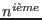

Les symboles particuliers sont tous ceux des expressions régulières à l'exception des symboles « + » et « | ». A cette liste, on rajoute les symboles de la commande de substitution « s ». Ces symboles sont :
| Symbole | Description | ||||
« \( » et « \) » |
Définit une portion d'expression régulière. | ||||
« \ |
Ne fait pas partie des expressions régulières mais représente la  portion d'une expression régulière. | ||||
« & » |
Ne fait pas partie des expressions régulières mais représente la portion de ligne d'entrée qui correspond à l'expression régulière. |
Exemple 14..4 :
s/\([ \t]*function[ \t]*\)\([0-z]*\)\([ \t]*(.*)\)/#FONCTION \2/
La commande « sed » utilisée ici est la commande « s ». Sa syntaxe est :adresse1
s/expr
/expr
/
On constate donc que les adresses de début et de fin sont absentes. Par conséquent, cette requête s'applique à toutes les lignes en entrée (cf.). Après analyse, il apparaît que cette requête « sed » se décompose de la façon suivante :
s/
\([ \t]*function[ \t]*\)
\([0-z]*\)
\([ \t]*(.*)\)
/
#FONCTION \2
/
Nous distinguons donc trois regroupements d'expression régulière :
[ \t]*funtion[ \t]* »
[0-z]* »
[ \t]*(.*) »
Dans le second membre de la commande « s » («#FONCTION \2») l'expression «\2» référence donc la chaine correspondant à «[0-z]*».
Analysons chaque regroupement du premier membre de cette requête :
« [ \t]*funtion[ \t]* ».
Tout d'abord «[ \t]*» désigne le caractèreou bien
un nombre quelconque de fois. « function » représente tout simplement cette chaine de caractères. Par conséquent, «
[ \t]*funtion[ \t]*» désigne la chaine « function » suivie et précédée d'espaces et de tabulations.
La seconde partie, « [0-z]* », désigne un des caractères dont le code ASCII est compris entre celui de « 0 » et celui de « z »14.3, un nombre quelconque de fois.
Nous avons donc, approximativement, une chaine de caractère quelconque sans espaces ni tabulations.
La troisième partie, «[ \t]*(.*)» reprend la séquence «[ \t]*» représentant une séquence d'espaces et de tabulations un nombre quelconque de fois. «(.*)» désigne le caractère « ( », suivi de caractères quelconques un nombre indéterminé de fois («.*»), suivi par le caractère « ) ». En conclusion, cette dernière partie représente une chaine de caractères quelconque (évuentuellement vide) encadrée par des parenthèses et précédée par un nombre quelconque d'espaces et de tabulations.
Le premier membre de cette requête « sed »,
\([ \t]*function[ \t]*\)\([0-z]*\)\([ \t]*(.*)\)
représente donc :
La seconde partie de la requête « sed »,
#FONCTION \2
substitue l'ensemble de la ligne par :
#FONCTION »,
Exemple 14..5 :
s/abcdef1234567890/&ghijkl/
Cette requête « sed » équivaut à :
s/abcdef1234567890/abcdef1234567890ghijkl/